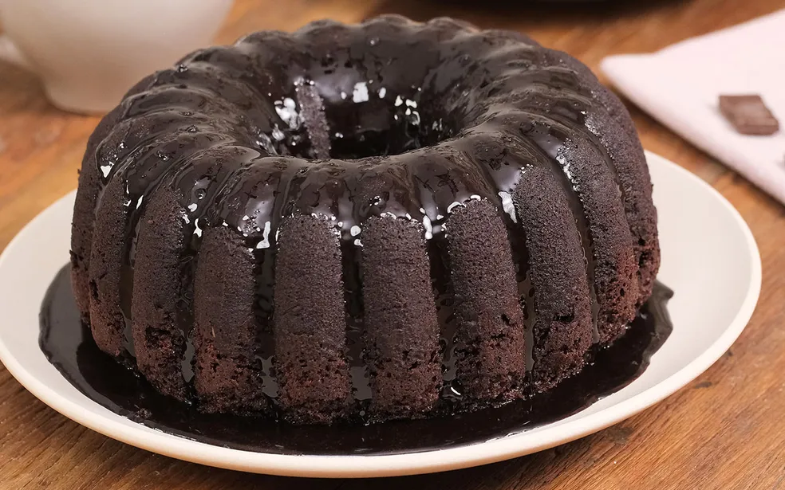

Bolo de Chocolate
Ingredientes:
- 2 xícaras de farinha de trigo
- 1 xícara de açúcar
- 1 xícara de leite
- 3 ovos
- 1/2 xícara de óleo
- 1 xícara de chocolate em pó
- 1 colher de sopa de fermento em pó
Modo de Preparo:
- Pré-aqueça o forno a 180°C.
- Em uma tigela, misture todos os ingredientes.
- Despeje a massa em uma forma untada.
- Asse por aproximadamente 30-40 minutos.